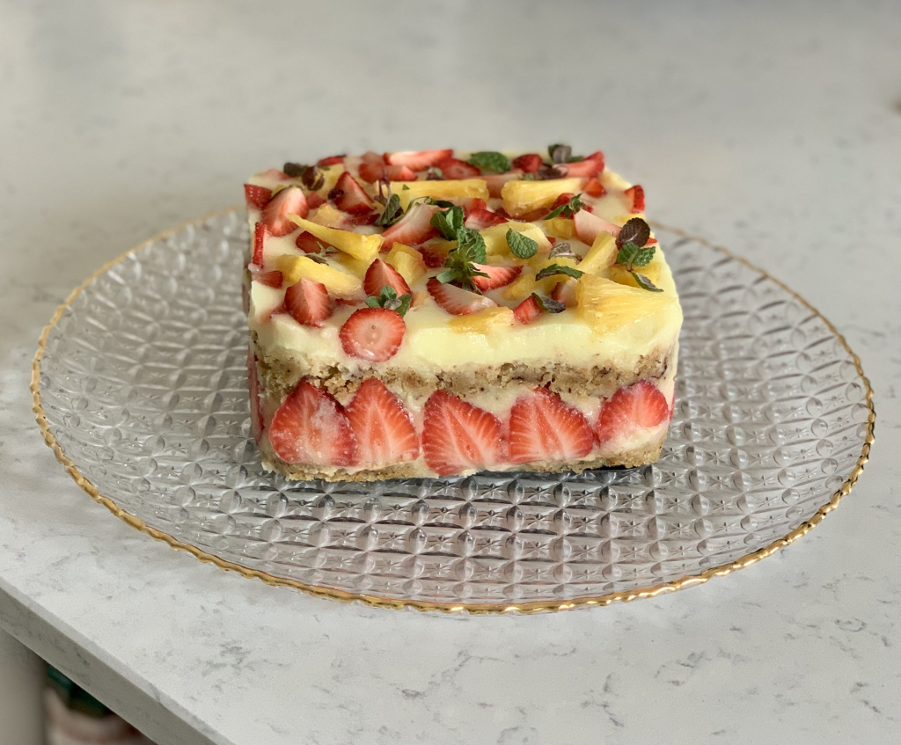

Idei de retete de dulciuri care va vor face papilele gustative sa danseze:
Desertul este un fel de mincare mai usoara, de obicei dulciuri, fructe, branzeturi etc., care se serveste la sfarsitul mesei
1) Baked Alaska
Bezea caramelizata calda si inghetata cremoasa.
Ingrediente:
|
Pentru blat: *120 g de unt la temperatura camerei *300 g de zahar *doua oua *250 g de faina *50 g de cacao *240 ml de lapte batut *o lingurita de praf de copt *un praf de sare Pentru umplutura: *50 g de inghetata de vanilie *150 g de inghetata de cirese *300 g de inghetata de ciocolata cu cirese amare **Sau puteti folosi unul sau mai multe feluri din inghetata preferata. Pentru bezea: *6 albusuri reci *un praf generos de sare *o lingurita de zeama de lamaie *300 g de zahar |
Prepararea Baked Alaska:
Totul sta in echilibrul temperaturilor. Inghetata trebuie sa fie extrem de rece si bine sigilata intre blat si bezea. Iar timpul de coacere trebuie sa fie scurt, la o temperatura foarte ridicata. Se incepe cu blatul. Aduceti impreuna intr-un bol faina, cacaoa, praful de copt si sarea. Separat bateti bine untul impreuna cu zaharul. Cand amestecul a devenit pufos si omogen, adaugati ouale si apoi incorporati, alternandu-le, laptele batut si amestecul de ingrediente uscate. De ce se foloseste lapte batut? Pentru ca blatul capata o consistenta densa si catifelata, perfecta pentru a izola termic inghetata. Se pregateste o forma de tort de 18 cm, unsa cu unt si tapetata cu faina, 20 – 25 de minute in cuptorul preincalzit la 180 de grade, si gata. Poate ramane linistit la racit, asteptadu-si rolul de baza pentru Baked Alaska. Intre timp, atentia se muta catre ”domul” de inghetata. Se lasa putin la temperatura camerei, ca sa fie mai usor de manevrat. Intr-un bol de aproximativ 16 cm diametru se pune folie de plastic si aranjati inghetata in straturi. Nu il umpleti de tot, lasati cam 1 – 2 cm pentru blat. Si din nou in congelator, pret de o ora. Decupati blatul racit astfel incat sa se potriveasca in bol, peste inghetata, acoperiti din nou cu folie si lasati totul la congelat peste noapte. Poate sta oricat, de la 4 – 5 ore, la cateva zile. Asta face din prajitura Alaska un desert extrem de convenabil de facut pentru orice ocazie – poate fi asamblat chiar si cu zile inainte.
Preparare bezea:
Se bat foarte bine albusurile, cu praful de sare si zeama de lamaie. Apoi adaugati treptat zaharul, pana obtineti spuma tare si lucioasa pentru bezea. Scoateti inghetata, intoarceti-o pe o tava de tarta cu baza detasabila, si imbracati-o in bezea. Secretul este urmatorul: pentru un timp optim in cuptor, de 8 – 10 minute, la 240 de grade, e nevoie de un strat de bezea de 2 cm grosime. Astfel, inghetata nu se va topi, blatul va redeveni dens si catifelat, iar bezeaua calda va fi perfect caramelizata.
Pofta buna!
2) Budinca duo cu ciocolata si mascarpone
Ingrediente:
|
Pentru blatul cu nuca: *4 albusuri *4 linguri zahar *4 linguri pesmet *4 linguri nuca macinata *2 picaturi esenta de migdale Pentru blatul cu cacao: *4 oua *4 linguri zahar *2 linguri ulei *4 linguri faina *2 linguri cacao *1/2 lingurita praf de copt *esenta de rom Pentru crema de mascarpone: *4 galbenusuri *4 linguri lapte *150 g zahar *250 g mascarpone *200 ml smantana pentru frisca *1 lingurita gelatina *1 plic zahar vanilat *esenta de vanilie |
Prepararea blatului cu nuca:
Albusurile se bat spuma tare cu un praf de sare, apoi se adauga zaharul pudra si se mixeaza pana spume devine densa si lucioasa. Aceasta trebuie sa faca “turturi” in momentul in care scoatem paletele mixerului din castron. Adaugam esenta de migdale, nuca macinata si pesmetul. Amestecam usor cu o spatula cu miscari de jos in sus. Compozitia se toarna in strat uniform intr-o tava (20/30 cm) tapetata cu hartie de copt.
Preparare blatului cu cacao:
Separam albusurile de galbenusuri. Albusurile le batem spuma tare cu un praf de sare, la viteza maxima a mixerului. Cand spuma s-a intarit bine adaugam zaharul pudra si mixam pana spuma devine densa si lucioasa. Spuma de albusuri se va tine bine de paletele mixerului. Separat frecam galbenusurile cu uleiul si esenta de rom, pana obtinem o emulsie stabila. Aceasta emulsie o turnam peste albusuri. Dam mixerul la viteza cea mai mica si omogenizam usor compozitia. Faina o cernem impreuna cu cacaoa si praful de copt peste compozitia de oua. Dam mixerul deoparte si amestecam totul cu o spatula, usor, cu miscari de jos in sus. Aceasta compozitie se toarna in tava peste blatul cu nuca si se niveleaza usor. Tava se da la cuptorul incins la foc mediu, pentru cca 30-40 de minute, pana devine ferm la atingere si trece testul cu scobitoarea. Blatul se scoate pe un gratar si se lasa la racit, cu tot cu hartia de copt.
Preparare crema de mascarpone:
Gelatina se hidrateaza in cateva linguri de apa rece. Galbenusurile se mixeaza cu zaharul pana se albesc. Se adauga laptele si se pune cratita pe foc. Se fierbe la foc mic pana se topeste zaharul si compozitia se ingroasa ca o smantana. Se da deoparte si se lasa sa se racoreasca putin, apoi se adauga gelatina. Se amesteca bine pana aceasta se dizolva. Se lasa la racit. In crema de oua racita adaugam mascarponele si mixam bine. Separat se mixeaza smantana pentru frisca pana incepe sa prinda consistenta. Se adauga zaharul vanilat si se mixeaza pana devine pufoasa si ferma. O incorporam apoi in crema de mascarpone. In tava in care am copt blatul, tapetata cu folie alimentara, se pune blatul si deasupra in strat uniform crema de mascarpone. Se da la frigider pana se intareste crema si prajitura poate fi portionata. Inainte de servire se pudreaza cu cacao.
Pofta buna!
3) Prajitura cu banane, ananas si capsuni
Ingrediente:
|
Pentru blatul cu banane: *2 banane bine coapte *140 g zahar brun *60 g apa *120 g ulei floarea soarelui *150 g ananas zdrobit la blender (pireu) *1 lingurita bicarbonat *1/2 lingurita praf de copt *Coaja rasa fin de la 1 lamaie *270 g faina Pentru crema cu ananas: *300 ml lapte vegetal (soia, ovaz) *50 g amidon *150 g ananas proaspat *Sucul de la 1 lamaie *Coaja de la 1 lime *50 g zahar tos *100 g unt cocos Fructe proaspete: *200 g capsuni *1/2 ananas proaspat, bine copt (lasati-l pe masa, ambiental 1-2 zile inainte de a il manca) *Frunze de menta |
 |
Prepararea blatului:
Incingeti cuptorul la 160C si pregatiti o tava intinsa, cu bordura ( usor mai mica decat tava de la cuptor) si puneti hartie de copt in ea. Intr-un bol mare zdrobiti bananele cu zaharul brun si bateti-le cu o furculita pana devin spumoase. Adaugati apoi apa, uleiul si ananasul pireu. Omogenizati usor. Adaugati apoi praful de copt, bicarbonatul si faina. Amestecati usor pana se incorporeaza bine ingredientele. Turnati in tava, nivelati si dati la cuptor pentru 18-20 de minute. Lasati la racit.
Pregatire crema:
Blendati ananasul impreuna cu sucul de lamaie pana devine un pireu. Amestecati pireul de ananas cu zahar si laptele vegetal, intr-o cratita. Puneti pe foc, aduceti la punctul de fierbere. Dizolvati amidonul intr-un bol mic in putin lapte vegetal. Luati cratita de pe foc si turnati amidonul dizolvat in compozitie. Puneti din nou la fiert la foc mediu spre mic, amestecand continuu pana se ingroasa si devine o crema lucioasa si vascoasa. Luati de pe foc si adaugati untul de cocos. Omogenizati bine, apoi adaugati coaja de lime. Lasati la racit.
Montare:
Decupati 2 foi din blatul copt, in functie de tava/ inelul in care montati prajitura, rotunda sau patrata, dupa plac. Puneti in forma foi de acetat pe marginile acesteia sau folie alimentara daca nu aveti foi de acetat. Asezati prima felie de blat in inel/ forma, jumatate din fructele proaspete, feliate sau taiate cuburi mici, apoi jumatate din crema. Asezati a doua foaie de blat decupata, urmata de crema ramasa si restul de fructe proaspete, dupa cum preferati voi. Dati la rece peste noapte sau pana a doua zi. Scoateti prajitura din inel/ rama, indepartati foile de acetat, presarati frunze de menta fresh si taiati in cuburi/ felii.
Pofta buna!